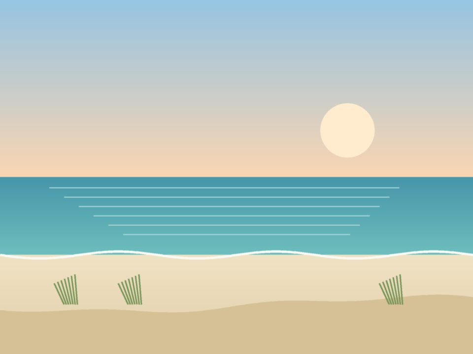

Beachfront · State park
The Lodge at Gulf State Park
A beachfront Hilton inside Gulf State Park, with trails out the back door, a pool and Perch restaurant. The easiest romantic base.
Official details for The Lodge at Gulf State ParkWhite sand, Gulf seafood, naval aviation.
Alabama’s small stretch of coast has some of the whitest sand on the Gulf. Land minutes from the beach, bike the trails of Gulf State Park, eat shrimp straight off the boats, and save a morning for the National Naval Aviation Museum, an easy drive away in Pensacola.

Time illustration: direct distance at 150 KTAS plus 15 minutes for departure and arrival, matching the discovery page. Use ForeFlight for your actual flight plan.
KJKA, Jack Edwards National in Gulf Shores, sits just north of the beach and Gulf State Park.
3190 Airport Drive, Gulf Shores, AL 36542
Gulf Air Center lists crew cars and rental cars; pilots also report rental delivery to the FBO from local agencies. Ask about two-night parking, fees and after-hours fuel. No live fuel price is shown.
Busy military training airspace surrounds the Pensacola and Mobile areas, and NAS Pensacola is close by. Review the sectional, restricted areas and current NOTAMs, and expect summer thunderstorms most afternoons.
A state-park lodge, a high-rise with a private balcony over the Gulf, or a classic beach resort. Rates and availability need travel dates.
A beachfront Hilton inside Gulf State Park, with trails out the back door, a pool and Perch restaurant. The easiest romantic base.
Official details for The Lodge at Gulf State ParkGulf-front condominium suites with big balconies, many with private hot tubs, in Orange Beach. Choose it for space and views.
Official details for Turquoise PlaceA long-running beachfront resort with Voyagers, the area’s best-known fine-dining room, downstairs.
Official details for Perdido Beach ResortA private beach house in Orange Beach or Fort Morgan, often with a pool. Book through a local rental agency; summer stays may require a week.
Beach Life Vacations for Gulf-front beach homesGulf shrimp and oysters are the point. Reserve weekend dinners, especially in summer.
Upscale Gulf-front dining at Perdido Beach Resort in Orange Beach. The special-occasion choice.
Official details for VoyagersSeasonal coastal cooking with Gulf views at The Lodge at Gulf State Park. Refined but relaxed; time it for sunset.
Official details for PerchAn Orange Beach institution since 1983, famous for fried shrimp and gumbo. For a waterfront afternoon instead, try Lulu’s on the Intracoastal or Wolf Bay Lodge.
Official details for Doc’s Seafood Shack & Oyster BarHome of the “throwed rolls,” tossed hot across the dining room to your table, with big Southern plates. A memorable, casual lunch about 15 minutes inland in Foley.
Official details for Lambert’s CafeChoose one outing a day and leave plenty of time for the beach.
One of the world’s great aviation museums, at NAS Pensacola about an hour east, with more than 150 aircraft and Blue Angels history. Base access rules for visitors have changed in recent years; check the museum’s current entry requirements before you go.
Museum informationTwo miles of beach, a fishing pier and the Backcountry Trail, more than 25 miles of paved paths through dunes and pine forest. Rent bikes and ride for an hour or two.
A brick fort at the tip of the peninsula, about 40 minutes west, where the Battle of Mobile Bay was fought in 1864. Quiet beaches nearby.
Cruises leave from Orange Beach and Perdido Pass. Dolphins are common in the bays and passes.
Surf’s Up Dolphin CruiseThe Wharf in Orange Beach has waterfront shops, restaurants and a Ferris wheel. The Flora-Bama, a famous beach bar on the state line, has live music day and night.
The Flora-BamaThis prototype links to the local calendar. It does not yet match events to your travel dates.
The Blue Angels’ home base is NAS Pensacola. Practice shows and the homecoming air show are seasonal; check the schedule and public-access rules.
Gulf Shores’ big beachfront festival with food, music and art. Fun and crowded; book early.
Warm water and quieter beaches. Summer is hot and busy, with afternoon storms; hurricane season runs June–November.
Check the local calendar when choosing a weekend, and confirm dates and tickets with the organizer.
A sample Friday–Sunday weekend: beach, bikes, naval aviation and two seafood dinners. No bookings or availability confirmed.
Land at KJKA mid-morning and borrow a crew car.
Fried shrimp and gumbo at Doc’s Seafood Shack in Orange Beach.
An hour on the beach at Gulf State Park, then fly home before the afternoon storms.
Land at KJKA, subject to weather and your actual flight plan, and pick up the car.
Check in and head straight to the beach.
Dinner at Voyagers.
Ride the Backcountry Trail in Gulf State Park.
Fried shrimp at Doc’s, then a dolphin cruise or more beach time.
Sunset dinner at Perch.
The National Naval Aviation Museum, if base access allows, or a slow beach walk.
Return the car and allow time at the FBO; storms build through summer afternoons.
Let weather and your flight plan set the departure.
A long morning at the National Naval Aviation Museum in Pensacola.
Fort Morgan and its quiet beaches.
Live music at the Flora-Bama or dinner at The Wharf.
These details make the difference between an appealing list and a usable getaway.
Car and lodging first, then dinners.
Pensacola and Mobile have busy military training areas. Brief them before you go.
June through November. Watch the tropics and keep plans flexible.
Rates and restaurant hours are date-dependent. No availability or live price is implied here.
Research-based selections, not personal-visit endorsements. Researched November 1, 2026. Several picks have no website link because official addresses could not be confirmed; check each one, and confirm hours, prices and availability directly before booking. Spotted something out of date, or have a favorite we missed? Email us at hello@wingawayweekends.com.
WingAway Weekends helps you discover the destination. Use ForeFlight and current official aviation information for route, performance, weather, NOTAMs and preflight decisions. Flight planning and PIC responsibility stay with the pilot.